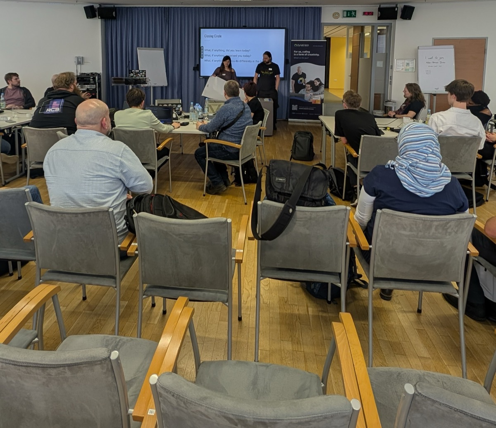

Coderetreat Linz 2027
· Wissensturm Linz
A free, day-long practice event for software developers. One problem, five sessions, a new partner every time.
Tickets open soon
Questions? abl@linz.coderdojo.net

About the event
Coderetreats are free day-long, intensive practice events, focusing on the fundamentals of software development and design. By providing developers the opportunity to take part in focused practice, away from the pressures of “getting things done”, the coderetreat format has proven itself to be a highly effective means of learning and nurturing software development skills.
How the day works
- Pair up. Two people, one keyboard.
- Work on one problem. Everyone, all day, the same exercise, e.g. Conway’s Game of Life or similar.
- Add a constraint. Each 45-minute session brings a new one, for example ping-pong TDD, no if-statements or silent pairing.
- Delete the code. When the session ends, the code goes. Nothing to finish, nothing to ship.
- Short retro, new partner. Talk about what you tried, then start again with someone new.
- Closing circle. At the end of the day, everyone shares what they learned.
Five sessions, the same problem, a new partner each time. The code is deleted, what you learned stays.
What to bring
Please bring your laptop and have a setup ready which allows you to write and run unit tests, so you don’t lose time at the beginning of the first session. It does not matter which language or IDE you use.
Schedule
- Breakfast & coffee
- Introduction & welcome
- Session 1
- Session 2
- Session 3
- Lunch
- Session 4
- Session 5
- Retro & closing
Location and contact
Wissensturm LinzKärntnerstraße 26
4040 Linz
If you have questions about the Coderetreat you can contact us via abl@linz.coderdojo.net.